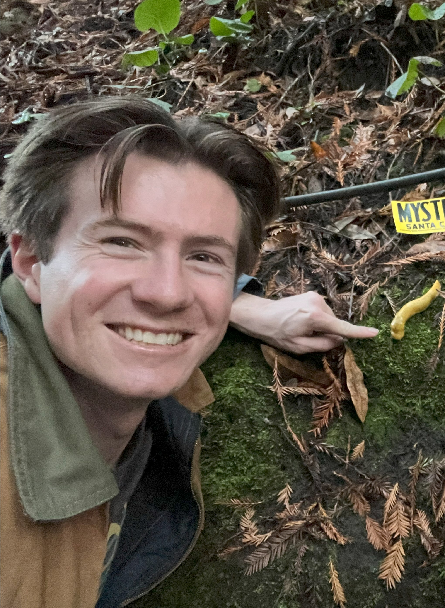

Bradley R Manzo
Digital Design & FPGA Engineering Graduate

Greetings! My name is Bradley Manzo and I'm graduating from the University of California, Santa Cruz with a Master's in Computer Science and Engineering in June 2026.
I'm passionate about Digital Design and Hardware Acceleration for AI, and am experienced with Embedded Systems, Digital Signal Processing, Computer Networks, and Machine Learning.
I have a strong background in System Verilog, C, and Python, verifying using CocoTB, and deploying on Lattice and Altera FPGAs.
My Master's Project combines each of these fields to design a hardware accelerated CNN, combining an ESP32c3 microcontroller with a Lattice iCEBreaker v1.1a FPGA for edge-inference.
Feel free to explore my projects, work experience, and resume, and reach out if you'd like to connect!
Resume
Download my resume below.
Download PDF